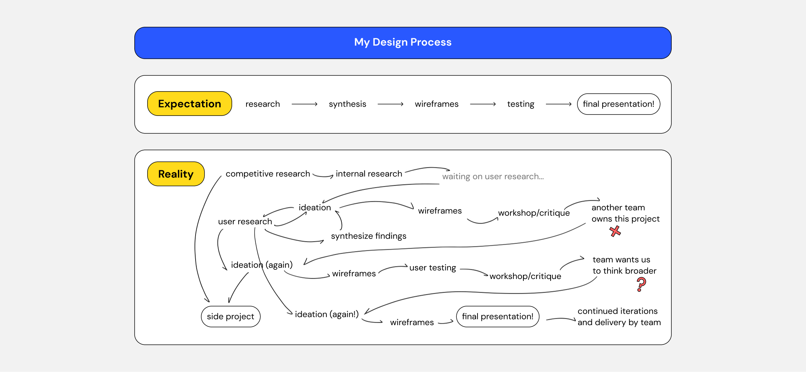
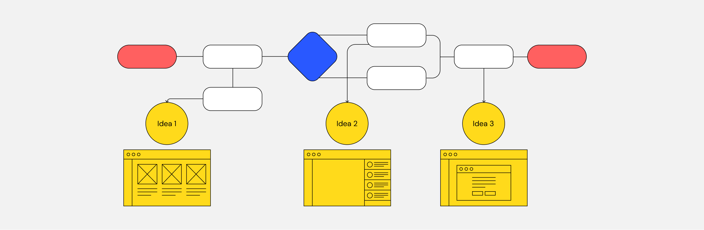
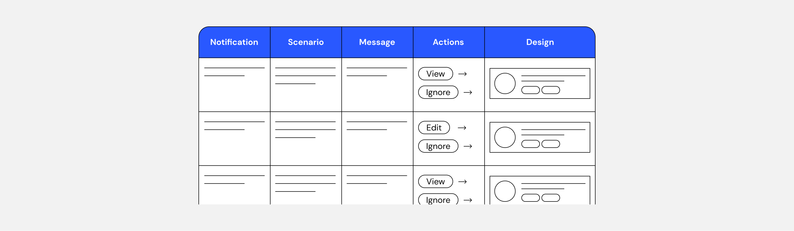
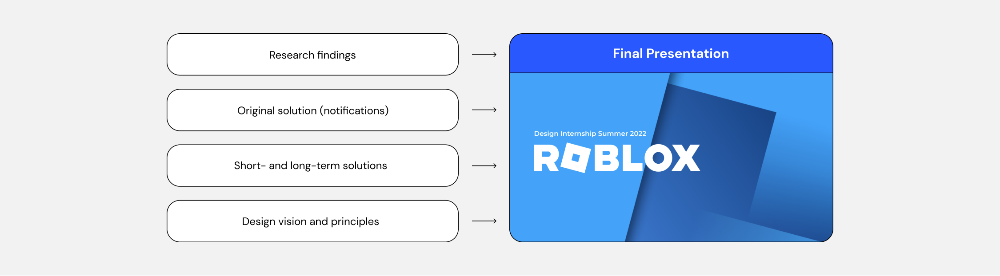
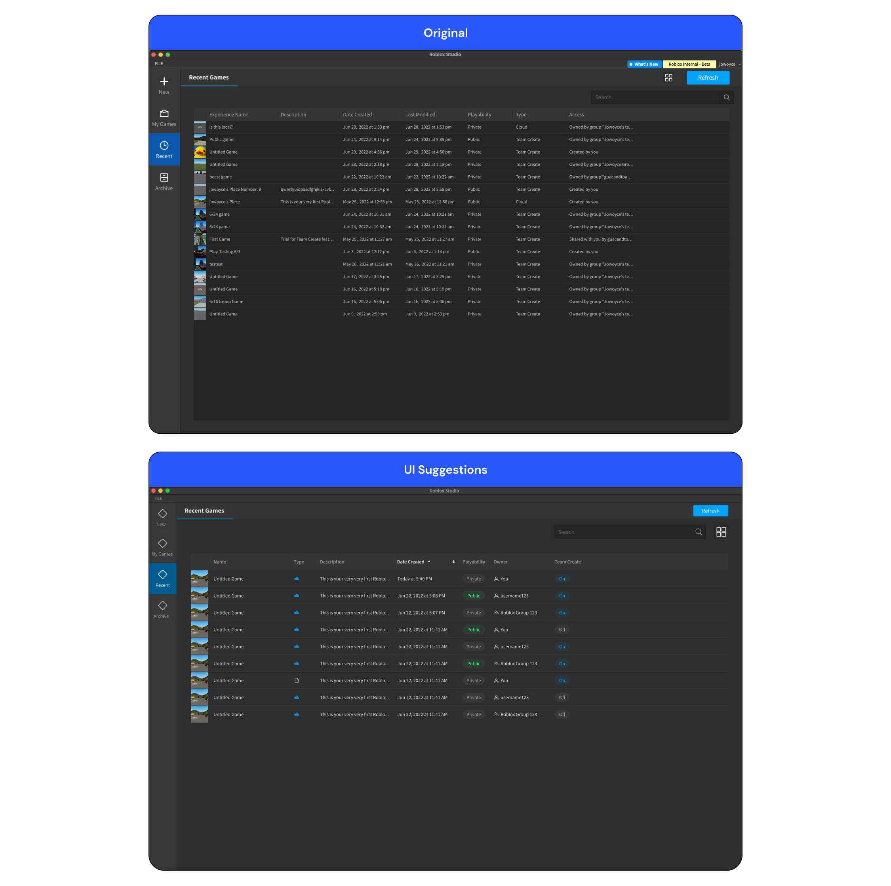
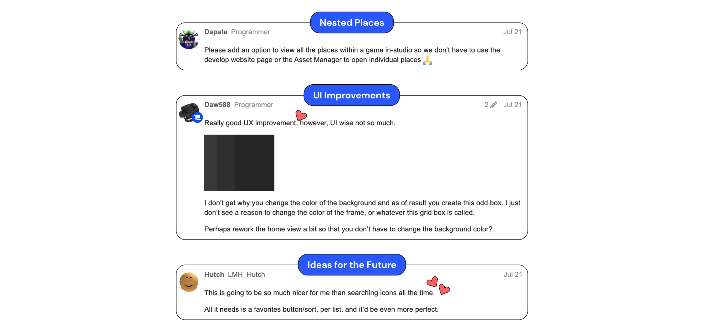
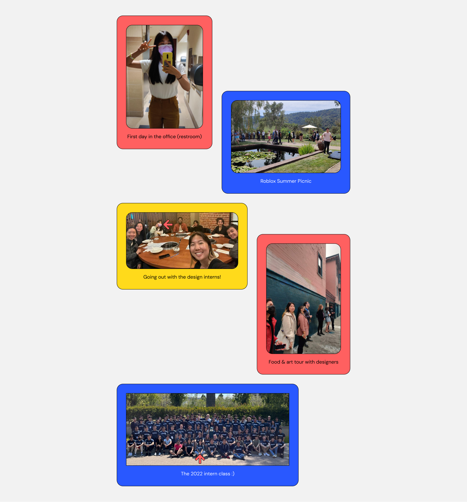

Duration
May - Aug 2022 (3 months)
Type
User Research, UI/UX Design
Tools
Figma
Over the summer of 2022, I was a design intern at Roblox, a popular game platform and game creation system with over 230 million registered users. As a member of the collaboration team, I worked on improving the collaboration experience in Roblox Studio, the game creation tool for Roblox.
Details and images for my projects have been omitted. If you would like to know more about this project, please contact me at joyceshen0@gmail.com!
My main project was quite a ride. The problem I was solving continuously shifted as I did more research and identified more opportunities and limitations in the collaboration space. I worked and learned through this project alongside a product management intern, guided by our two managers.
This was the initial problem our team had identified and presented to us.
We led primary and secondary research to better understand collaboration in creators’ current workflows and identify potential areas of change.
Based on our findings, we designed a user flow for the current process of recruiting, inviting, and onboarding collaborators. We then identified areas of opportunity within this process, which we translated into solution ideas (+ lo-fi wireframes).
I then led a workshop with engineers to get early feedback on our research, ideas, and how they aligned with the vision of our team.
After the workshop, one strong solution quickly emerged: sending collaboration-related notifications to creators. For the next week, we looked into the most suitable channels and frequencies for different notification content.
We then reached out to the team that works on notifications, who let us know that they would handle our solution from there. To deliver our recommendations to the team, we prepared a detailed guide they could refer to.
But now, with our initial solution unexpectedly out of our control, we were restless interns with more time to spare.
So, we decided to turn our focus to a product our team had access to: the start screen (landing screen of Roblox Studio, where creators can access their files). Our earlier research findings and continued research helped inform how we would surface more collaboration information on this screen.
A few of these solutions required us to prioritize different types of collaboration information. One activity we ran during our 5 user testing sessions was asking users to rank these in a tier list.
While we were working on collaboration information, our team and adjacent teams brought up broader issues they’d identified in the start screen. We began brainstorming ideas for these issues, and as we continued research and testing for the rest of the project, we consulted users and validated some of the ideas.
The biggest start screen issue was the information architecture—the navigation menu was misleading, files were hard to find, and frequented files were not prioritized. In a long-term solutions document, we addressed this with the ideas we tested and validated. We also created a short-term solutions document with a timeline for more immediate fixes.
This outlines some of the areas we tackled in the start screen.
In my final presentation for my internship, I presented these long-term solutions as a North Star design vision for the start screen and identified design principles to follow with future start screen improvements.
As a side project, I helped lead design support for another improvement to the start screen: a list view for files! This would enable creators to access more information about files and improve their file management.
I was recruited to this project a month after engineers began working on it to give feature and UI suggestions. This shows the original screen I was handed and the new suggestions I made.
We first released list mode to the community in beta, which was positively received in DevForum, a discussion platform for Roblox creators. See the DevForum posts here: Beta Release / Full Release
We also noted some constructive feedback which we improved on for the full release.
One of the biggest challenges I stumbled upon during this project was engineering limitations. From sacrificing good designs for ones that are easier to implement, to eliminating certain features because we didn’t have the infrastructure to back them up, I learned that designing can’t always be about what the designer thinks is right.
I also worked without an established design system, which meant that I had to look for existing components and assets in Roblox Studio’s interface and copy them to the best of my degree. This added some complexity to my design work and meant that I had to spend a lot more time explaining design details to engineers.
My internship experience challenged me in ways I’d never experienced before. For one, Roblox encouraged interns to work autonomously, and we were the ones who drove projects forward, determined next steps, and actively reached out for help.
By learning to sacrifice old work to push our project in new directions, I grew more flexible and resilient as a designer. But at the same time, I knew to stand my ground if there were any ideas I truly wanted to push forward.
Some of our earlier ideas were met with mixed reviews from our team. We quickly learned how important it was to align on our team’s background and values to drive ideas towards their vision.
Looking back, I had an amazing time working with my team and fellow design interns. Beyond just projects, I had so many opportunities to bond with these amazing people, and I’m glad I made the most of it. These are some of my favorite memories from this summer!
Let's get in touch!